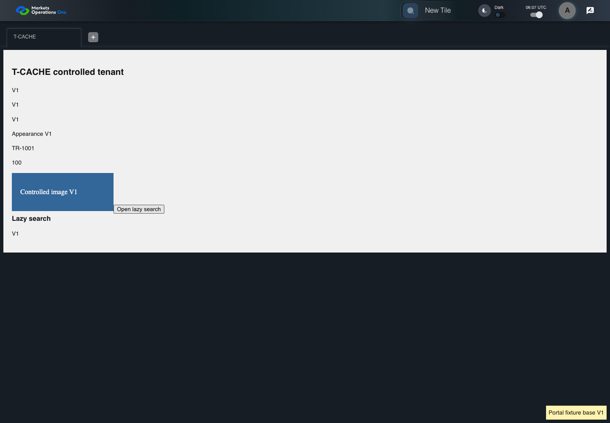
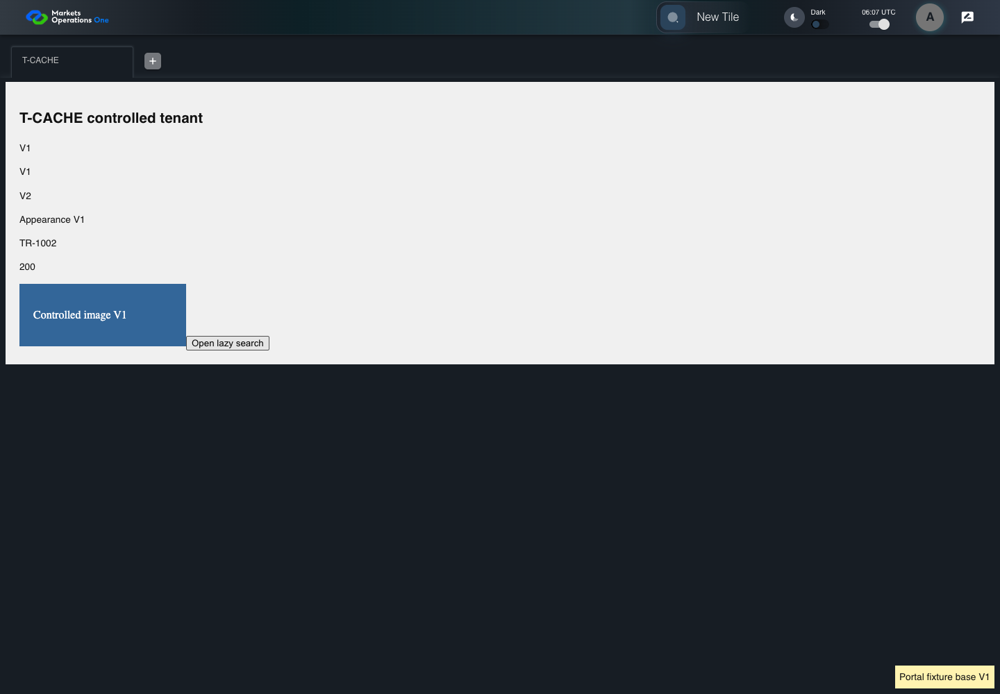

KNOW-049 real HTTP cache and controlled tenant lifecycle
PASS · application/run-050/know-049-real-http-cache-and-controlled-tenant-lifecycle-8515f655ec48-attempt-1 · ACTUAL_APPLICATION_LOCAL_SERVICES
Actual current React shell and real Chromium HTTP cache. Local HTTP fixture server supplies synthetic Alice, permissions, base entry wrapper, container, tile, trade, lazy content, CSS and images. V1/V2 markers identify controlled fixture assets. No browser routing, production CDN, real business tenant, or changed base binary acceptance.
2026-10-22T06:07:13.036Z to 2026-10-22T06:07:15.957Z
Assertions and result · Artifact manifest · Exact run inputs and source hashes
Result SHA-256:47af37f57d8fca1d7d0fb85936f0b6b618e0ff1b6828109ca52b3bb298d40ee8Machine observations
- cache-fixture-scope.json
f8cc16db6216423ab621e6f8ef13da61e5b7cb34a911103d221f77b39094f94f - catalog-permission.json
399a312e5dc113483cb1e464c713656c18e5aeacaf2f6f215867aca476090ead - http-cache-observations.json
3beb88077dbf45263c8d9b87cb01ce7c485b45369fc5b3813dce953c23e7d536
Screenshot capture: CAPTURED. Named frames: 12.
Step screenshot evidence: COMPLETE. 11/11 canonical steps have execution screenshots.
Canonical step timeline
Given Alice uses an isolated browser profile with the synthetic identity and permissions defined for this case
Execution: PASSED.
1. step-01 Visible state after step 1: Given Alice uses an isolated browser profile with the synthetic identity and permissions defined for this case
2026-10-22T06:07:13.823Z · 1440×1000
Step: /Users/lushevol/code/github/ratan-release-impact/workbench/tasks/ui-test-coverage-20261022/test-cases.md:12178
SHA-256:e073a145e20d9367b1e52935b861d3caa20dc309ef8375a6848ae59cfbff4262And Alice has catalog permission for the synthetic tile with exact title "T-CACHE"
Execution: PASSED.
2. step-02 Visible state after step 2: And Alice has catalog permission for the synthetic tile with exact title "T-CACHE"
2026-10-22T06:07:13.872Z · 1440×1000
Step: /Users/lushevol/code/github/ratan-release-impact/workbench/tasks/ui-test-coverage-20261022/test-cases.md:12179
SHA-256:e073a145e20d9367b1e52935b861d3caa20dc309ef8375a6848ae59cfbff4262And The browser cache holds V1 lazy-search assets
Execution: PASSED.
3. step-03 Visible state after step 3: And The browser cache holds V1 lazy-search assets
2026-10-22T06:07:14.471Z · 1440×1000
Step: /Users/lushevol/code/github/ratan-release-impact/workbench/tasks/ui-test-coverage-20261022/test-cases.md:12180
SHA-256:4a4776266adb725f11a21935825a89b4bc9d306e10a33a408f0df436bd91231bAnd The V2 entry references a new V2 lazy-search chunk
Execution: PASSED.4. step-04 Visible state after step 4: And The V2 entry references a new V2 lazy-search chunk
2026-10-22T06:07:14.503Z · 1440×1000
Step: /Users/lushevol/code/github/ratan-release-impact/workbench/tasks/ui-test-coverage-20261022/test-cases.md:12181
SHA-256:683dfc73d7922247bf8bc0c2551192c8b773305cffcd7c76ff8d32ff0febc802When Alice reloads the browser page containing the portal
Execution: PASSED.
5. step-05 Visible state after step 5: When Alice reloads the browser page containing the portal
2026-10-22T06:07:14.788Z · 1440×1000
Step: /Users/lushevol/code/github/ratan-release-impact/workbench/tasks/ui-test-coverage-20261022/test-cases.md:12182
SHA-256:e073a145e20d9367b1e52935b861d3caa20dc309ef8375a6848ae59cfbff4262And Alice clicks the text "New Tile" on the portal workspace page
Execution: PASSED.
6. step-06 Visible state after step 6: And Alice clicks the text "New Tile" on the portal workspace page
2026-10-22T06:07:14.902Z · 1440×1000
Step: /Users/lushevol/code/github/ratan-release-impact/workbench/tasks/ui-test-coverage-20261022/test-cases.md:12183
SHA-256:c068600c5fa37a13e929f981ef77d5da6ee8c40aaa4dd72f0b810baa91e756d5Then the drawer panel headed by "Tile Options" is visible on the portal workspace page
Execution: PASSED.
7. step-07 Visible state after step 7: Then the drawer panel headed by "Tile Options" is visible on the portal workspace page
2026-10-22T06:07:14.971Z · 1440×1000
Step: /Users/lushevol/code/github/ratan-release-impact/workbench/tasks/ui-test-coverage-20261022/test-cases.md:12184
SHA-256:c068600c5fa37a13e929f981ef77d5da6ee8c40aaa4dd72f0b810baa91e756d5When Alice clicks the text "T-CACHE" in the drawer panel headed by "Tile Options"
Execution: PASSED.
8. step-08 Visible state after step 8: When Alice clicks the text "T-CACHE" in the drawer panel headed by "Tile Options"
2026-10-22T06:07:15.076Z · 1440×1000
Step: /Users/lushevol/code/github/ratan-release-impact/workbench/tasks/ui-test-coverage-20261022/test-cases.md:12185
SHA-256:376de2fd713871e0ba61225ec5e587a1c37d7e05da19f3b57ed49def7fe3e45fAnd Alice requests opening the T-CACHE lazy search panel through its tenant UI
Execution: PASSED.
9. step-09 Visible state after step 9: And Alice requests opening the T-CACHE lazy search panel through its tenant UI
2026-10-22T06:07:15.328Z · 1440×1000
Step: /Users/lushevol/code/github/ratan-release-impact/workbench/tasks/ui-test-coverage-20261022/test-cases.md:12186
SHA-256:016856fe08aeb5f0ca9c1605ca427cd316aaf5beb7d95c2adec55227ac4e9d6aThen The lazy search panel displays its fixture-version marker "V2"
Execution: PASSED.10. step-10 Visible state after step 10: Then The lazy search panel displays its fixture-version marker "V2"
2026-10-22T06:07:15.378Z · 1440×1000
Step: /Users/lushevol/code/github/ratan-release-impact/workbench/tasks/ui-test-coverage-20261022/test-cases.md:12187
SHA-256:8925a61f9f54980a3f82373488d9e4d721454547fd312700dddd612a3374f249And The lazy search panel displays no fixture-version marker "V1"
Execution: PASSED.
11. step-11 Visible state after step 11: And The lazy search panel displays no fixture-version marker "V1"
2026-10-22T06:07:15.428Z · 1440×1000
Step: /Users/lushevol/code/github/ratan-release-impact/workbench/tasks/ui-test-coverage-20261022/test-cases.md:12188
SHA-256:8925a61f9f54980a3f82373488d9e4d721454547fd312700dddd612a3374f249
Additional named frames

The final visible state after the named test assertions.
2026-10-22T06:07:15.529Z · 1440×1000Step: Test source: /Users/lushevol/code/github/ratan-release-impact/workbench/e2e/audit-specs/cache-lifecycle.spec.ts:14
SHA-256:
8925a61f9f54980a3f82373488d9e4d721454547fd312700dddd612a3374f249Screenshots establish visible state only. Assertions and traces support functional claims.